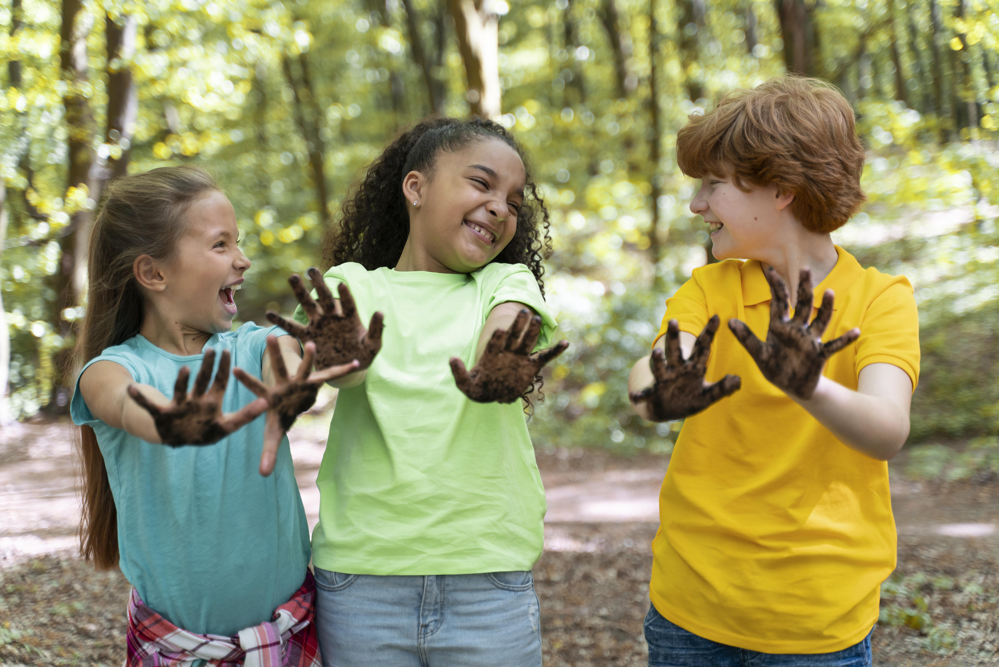
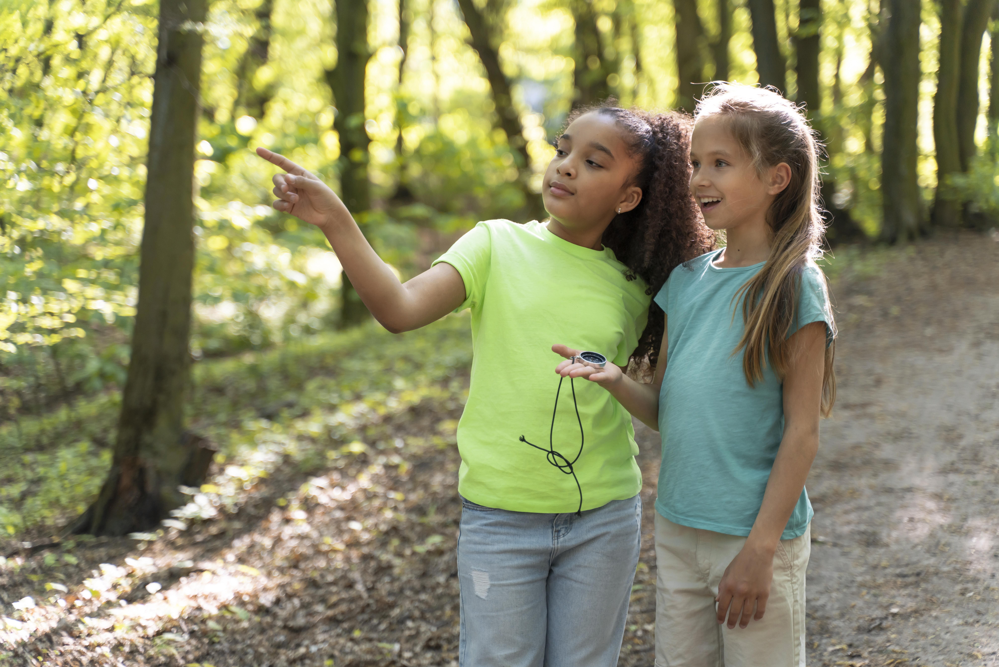
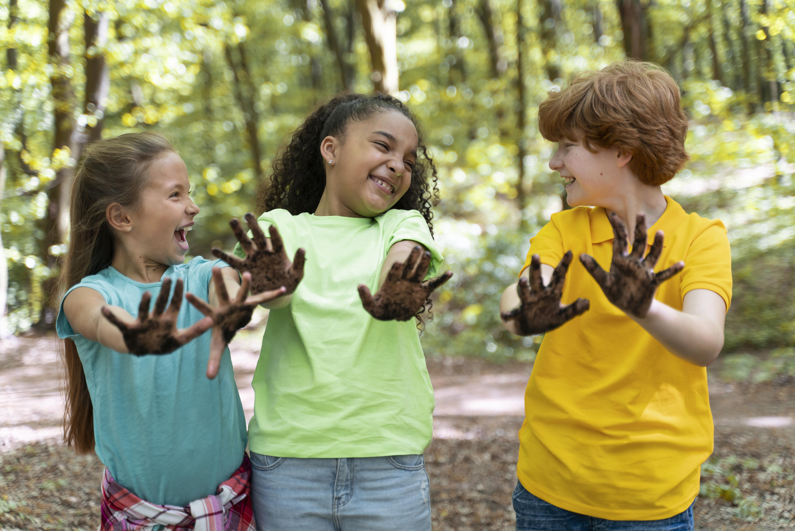
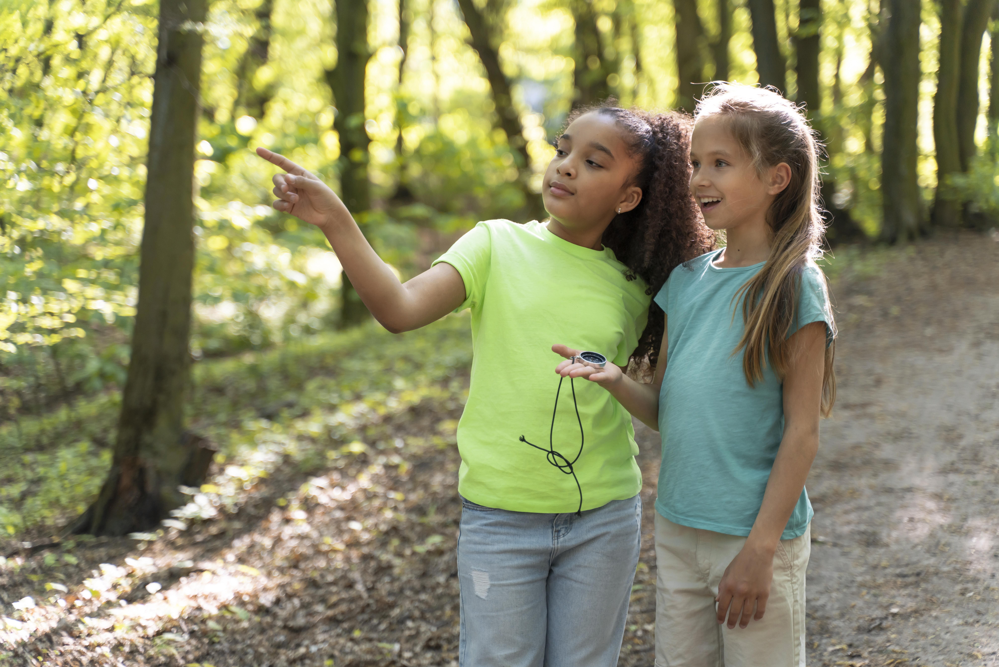
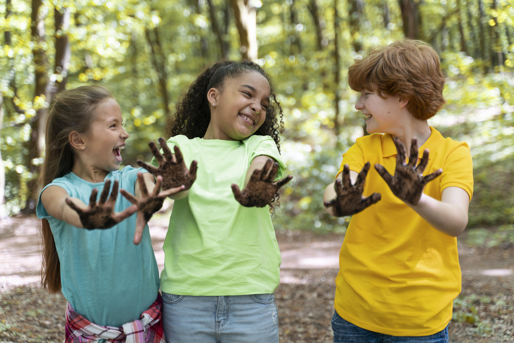
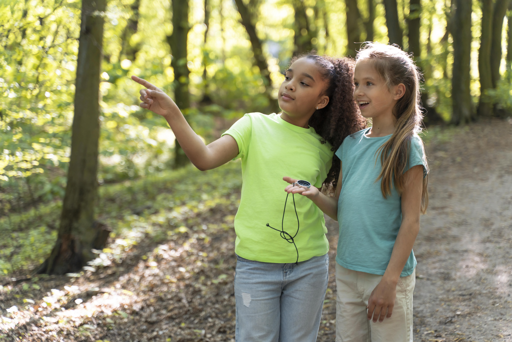

Galeria de Fotos


 



Na FutureKids, cada projeto nasce de um propósito: oferecer às crianças oportunidades reais de crescimento, aprendizado e inclusão. Acreditamos que o desenvolvimento infantil vai muito além da sala de aula — ele acontece nas brincadeiras, nas descobertas, nos vínculos e nas experiências que despertam o potencial de cada criança.
Por isso, nossa gestão de projetos é feita com carinho, responsabilidade e visão estratégica. Cada iniciativa é cuidadosamente planejada, registrada e acompanhada para garantir que os recursos sejam bem aplicados e que os resultados sejam mensuráveis e transformadores.
Utilizamos um sistema de cadastro detalhado, onde registramos:
Além disso, cada projeto conta com uma galeria de fotos e vídeos que documenta os momentos vividos, e um sistema de categorização que facilita a organização por área de atuação, faixa etária ou tipo de atividade.
Essa estrutura nos permite crescer com consistência, fortalecer parcerias e, acima de tudo, garantir que cada criança atendida pela FutureKids receba o cuidado e a atenção que merece.
Conheça nossos projetos


Crianças atendidas
Atividades realizadas
Participação média